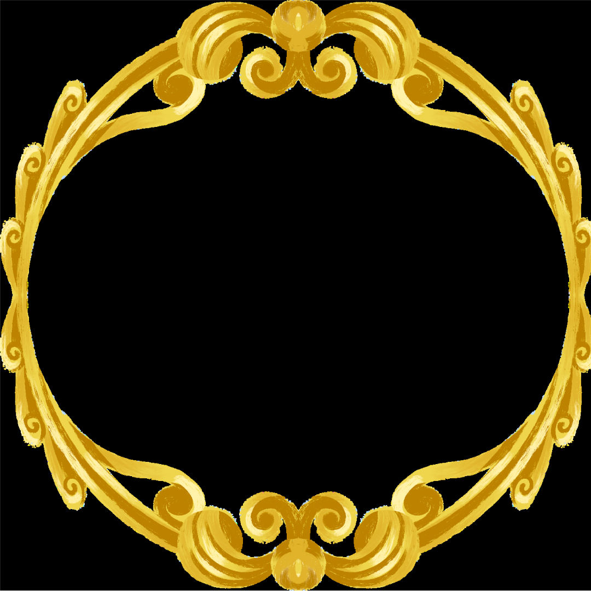

Newt Scamander
Este é um bruxo inglês, famoso Magizoologista e autor do livro Animais Fantásticos e Onde Habitam. Scamander se juntou ao Ministério da Magia e também se envolveu na Guerra Bruxa Global, onde conheceu Polpentina Goldstein que veio a se tornar sua esposa.